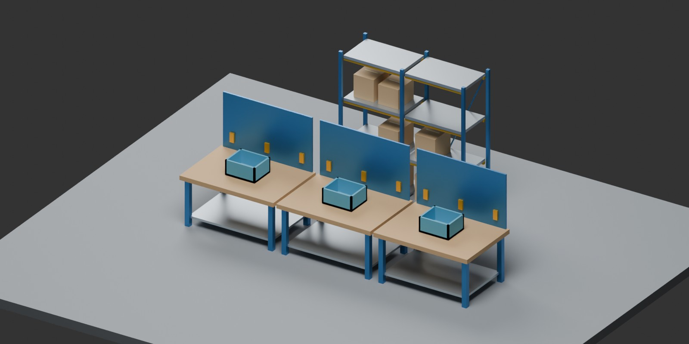

Blender add-on · partner release
AisleSmith
Nine modular fixture generators for warehouse, workshop and retail scenes. Build pallet racks, shelving, gondolas, benches, crates, totes and safety rails directly in Blender — locally, with editable mesh output.

What it does
AisleSmith is a focused fixture generator for artists building warehouse aisles, storerooms, retail backrooms, industrial sets and workshop environments. Choose a fixture, set dimensions, customize the finish and create it directly in your scene.
Every result is regular Blender mesh geometry, organized into named per-fixture collections. Load the saved settings from a selected fixture and rebuild it with new parameters when you want a variation. Rebuilding replaces that fixture's generated geometry, so save manual edits first.
from the workbench
“The point isn't to replace modeling. It's to get the repeatable, unglamorous fixtures into the scene fast, so the art time goes where it matters.”
— AisleSmith projectNine generator families
- Pallet racks with optional cartons and timber pallets
- Boltless storage shelving
- Cantilever storage for long timber stock
- Double-sided retail gondola displays
- Workbenches with a simple rear pegboard
- Timber pallets and cargo stacks
- Reinforced wooden shipping crates
- Open-top industrial tote stacks
- Safety barriers with posts and guardrails
Layout controls cover single, row and grid placement, spacing, bays, shelf levels, material palette, cargo fill and a repeatable variation seed. Five palettes and three detail levels are included.
Real output

AisleSmith generates geometry and simple node-based colour materials locally. No cloud service, account, texture downloads or model credits are required.
This is a visual construction tool, not a structural engineering tool. It provides no load calculations, certified rack specifications, collision/LOD generation or automatic game-asset export. Geometry Nodes live updates are not included.